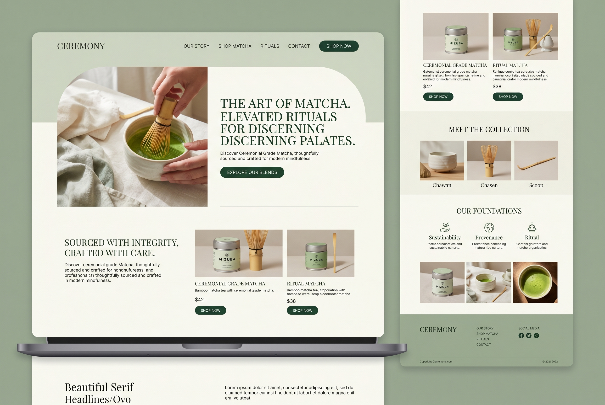

Core Tin
Ceremonial Matcha
Bright, creamy, and sweet-finished. Built for daily bowls and precise morning focus.

Ceremonial grade • Uji, Japan
A refined matcha line built around first-harvest leaves, soft bitterness, and a slower, brighter start to the day.
Bright, creamy, and sweet-finished. Built for daily bowls and precise morning focus.
The collection
The visual system came from the generated reference: parchment creams, deep forest greens, a softened editorial grid, and large open breathing room around each decision. Instead of improvising the art direction, the image set the tone first.
Balanced sweetness and a soft marine finish for everyday preparation.
A slightly deeper profile for lattes, iced drinks, and more structured flavor.
Bamboo whisk, scoop, and bowl set selected to match the palette and ritual.
Our foundations
Picked for brightness, depth, and a smoother finish in the cup.
Closer sourcing, better quality control, and a tighter product story.
Fine texture and slower processing to preserve color and flavor.